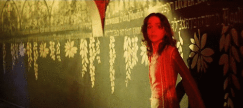

ΓΡΑΜΜΑ ΠΑΝΤΡΕΜΕΝΗΣ ΣΕ ΠΕΡΙΟΔΙΚΟ YΠΟΛΟΓΙΣΤΩΝ
Αγαπητό PC- Solutions,
Πέρσι, έκανα αναβάθμιση από το Αρραβωνιαστικός 5.0 στο Σύζυγος 1.0 και παρατήρησα πως το καινούριο πρόγραμμα άρχισε να κάνει αναπάντεχες αλλαγές στα λογιστικά φύλλα,περιορισμένη πρόσβαση στις εφαρμογές λουλουδιών και χρυσαφικών που παλιότερα, στην έκδοση Αρραβωνιαστικός 5.0, δούλευαν απρόσκοπτα.
Επίσης, το Σύζυγος 1.0 απεγκατέστησε πολλά άλλα πολύτιμα προγράμματα όπως το Ρομαντικός Περίπατος 9.9 και εγκατέστησε ανεπιθύμητα Popups,όπως τα Champions League 5.0 και Κυριακή στα Γήπεδα 8.0.
Το Διάλογος 1.3 δεν τρέχει πια ενώ το Καθαριότητα 2.6 προκαλεί κολλήματα και κατάρρευση του συστήματος.Προσπάθησα να τρέξω το Μουρμούρα 5.3 GOLD edition..... αλλά εις Mάτην.
Μια απελπισμένη γυναίκα.
AΠΑΝΤΗΣΗ ΠΕΡΙΟΔΙΚΟΥ:
Αγαπητή Απελπισμένη γυναίκα:
Έχε υπ' όψιν πως το Αρραβωνιαστικός 5.0 είναι ψυχαγωγικό πακέτο ενώ το Σύζυγος 1.0 είναι λειτουργικό σύστημα, με απαιτήσεις από τον χρήστη.
Προσπάθησε να δώσεις την εντολή C:\Nomiza_pws_me_agapouses.exe και εγκατέστησε το Δάκρυα 6.2 σε original έκδοση.
Λογικά, το Σύζυγος 1.0 θα εκκινήσει αυτόματα τις εφαρμογές Ενοχή 3.0 και Λουλούδια 7.0 σε random λειτουργία.
ΠΡΟΣΟΧΗ
* Υπερβολική χρήση του παραπάνω προγράμματος μπορεί να προκαλέσει την κλήση των screen saver Κατσούφικη Μουγκαμάρα 2.5 και Μπύρα 6.1 (Το Μπύρα 6.1 ίσως προκαλέσει την αναπαραγωγή WAV αρχείων τύπου 'Δυνατό ροχαλητό', που καταργούνται μόνο με επανεκκίνηση).
* Σε καμία περίπτωση δεν πρέπει να γίνει εγκατάσταση του Πεθερά 1.0 και μην σκεφτείτε καν να τρέξετε τα βοηθητικά αρχεία Εραστής 2005 BETA και Γκόμενος 3.8 unregisterd (δεν είναι συμβατά με το Σύζυγος 1.0 και μπορεί να προκαλέσουν κατάρρευση του συστήματος και πλήρης καταστροφή του λειτουργικού).
Συνοψίζοντας, το Σύζυγος 1.0 είναι ένα εξαιρετικό πρόγραμμα, αν και με περιορισμένη μνήμη που χρειάζεται κάποιο διάστημα για να εμπεδώσει μερικές καινούριες εφαρμογές.
Σκεφτείτε σοβαρά την απόκτηση συνοδευτικών προγραμμάτων που θα βελτιώσουν την απόδοση του σημαντικά. Συστήνουμε το Ζεστό Φαΐ 3.0 με auto update με την επιλογή 'εκτέλεση κατά την εκκίνηση'.
Με εκτίμηση - Ο admin ZODI
|